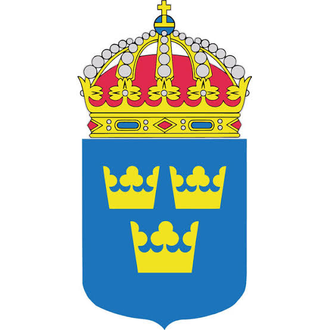
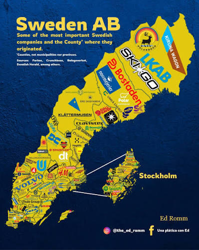

Análisis integral del Modelo Nórdico: cómo coexisten la competitividad y rentabilidad del libre mercado con la protección y redistribución de un Estado de Bienestar.
Equipo de Exposición & Distribución de Temas
Un sistema económico es la forma en que una sociedad organiza sus recursos para responder a tres preguntas fundamentales: ¿Qué producir? ¿Cómo producir? y ¿Para quién producir?
Para empezar, Suecia aplica una Economía Mixta (conocida a nivel mundial como el Modelo Nórdico). Esto significa que combina elementos de la economía de mercado con la intervención activa del Estado.
La producción está orientada al libre mercado y a la exportación de alto valor. Principalmente, las empresas analizan qué necesitan los consumidores, qué productos tienen demanda en el mundo y cuáles pueden fabricar de forma eficiente y rentable.
Relación directa con los 5 Factores o Recursos Económicos estudiados en clase:

Mapa de concentración industrial y sedes empresariales originarias de Suecia.
En Suecia conviven la propiedad privada y la propiedad pública, lo que demuestra que no es ni una economía 100% privatizada ni una economía socialista donde el Estado sea dueño de todo.
Aproximadamente el 90% es de Propiedad Privada:
El Estado solo mantiene propiedad total o parcial en sectores clave donde prioriza el interés público: la minera de hierro LKAB, la energética Vattenfall, la red ferroviaria y el monopolio minorista de alcohol Systembolaget para cuidar la salud pública.
Las decisiones económicas en Suecia no están centralizadas en una oficina de mando; se toman de forma articulada entre dos niveles:
Las empresas y los consumidores: Deciden de forma descentralizada qué bienes producir, cómo innovar y a qué precio vender o comprar basándose en la oferta, la demanda y las señales de rentabilidad.
El gobierno y el parlamento: Deciden el nivel de impuestos, las regulaciones ecológicas estrictas, los presupuestos para salud y educación, y los programas de protección social para los desempleados.
Los mercados en Suecia funcionan bajo principios de alta libertad comercial, competitividad e integración internacional.
¿Por qué interviene el Estado si existen empresas privadas? Porque la economía no es solo generar ganancias: existen necesidades colectivas y derechos sociales que el mercado por sí solo no garantiza.
Suecia opera bajo un sistema de distribución dual que responde a la pregunta ¿Para quién producir?:
Alimentos, ropa, tecnología, vehículos y entretenimiento. Se distribuyen mediante el mercado, según el poder adquisitivo y las preferencias de cada persona.
Salud, educación, guarderías y protección social. Se distribuyen mediante el Estado de forma equitativa y universal como un derecho ciudadano, sin importar el nivel de ingresos.
Principales fortalezas comprobadas del sistema:
Desafíos económicos reales que enfrenta Suecia:
"Para concluir nuestra exposición: Suecia es el ejemplo tangible de que la división rígida entre capitalismo salvaje y socialismo centralizado es obsoleta. En la realidad económica, los sistemas no son completamente puros, sino que existen en un continuo.
El modelo sueco demuestra que es perfectamente viable mantener una economía de libre mercado altamente competitiva, productiva e innovadora, al mismo tiempo que se ejerce una intervención inteligente del Estado para garantizar cohesión social, educación y salud universales.
El gran aprendizaje de Suecia es que el libre mercado y el Estado de Bienestar no son polos opuestos, sino dos ruedas del mismo engranaje destinadas a generar riqueza y garantizar la dignidad humana."
¡Muchas gracias por su atención!